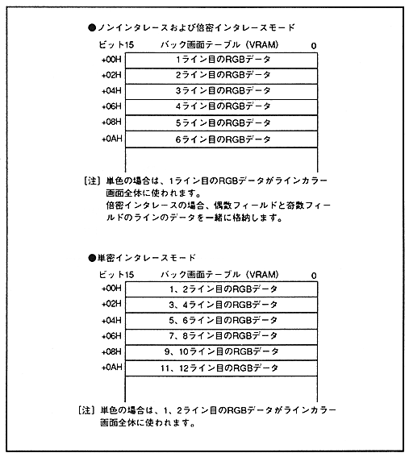

The back screen (BACK) is displayed only when no other screens are displayed. You can choose whether to make the entire screen a single color or specify a color for each line. The Specify the color data to be used for the line in 5 bits each for RGB.
In non-interlace and double-dense interlace modes, you can specify a color for each line, but in single-dense interlace mode, you can specify only for every two lines.
∙ The structure of the back screen table for each interlace mode is shown in Figure 7.4, and the data structure on the back screen table is shown in Figure 7.5.
Figure 7.4 Back screen table configuration
